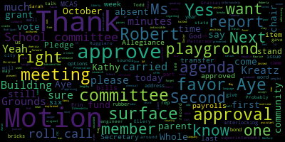

AI-generated transcript of Medford School Committee meeting October 15, 2018
English | español | português | 中国人 | kreyol ayisyen | tiếng việt | ខ្មែរ | русский | عربي | 한국인
Back to all transcripts
Heatmap of speakers
[Unidentified]: Paul said it's not.
[Mustone]: I'd like to call the Medford School Committee meeting to order for October 15, 2018. Could we all stand for the Pledge of Allegiance, please? I pledge allegiance to the flag of the United States of America, and to the republic for which it stands, one nation, under God, indivisible, with liberty and justice for all. So first on the agenda is approval of minutes from our October 1, 2018 meeting. Roll call vote. Thank you. Motion to approve. I mean, roll call attendance.
[Kreatz]: OK, yeah. Mrs. Fenton.
[DiBenedetto]: Present. Mrs. Fenton, present. Here.
[Mustone]: So six present, one absent. May I, motion to approve the minutes.
[F9BRnpGt19U_SPEAKER_04]: Motion to approve.
[Mustone]: All those in favor, approving the minutes from October 1st. Aye. Minutes are approved. Second agenda item is the approval of bills and transfer of funds. Motion to approve. All those in favor? Aye. Motion carried for the approval of bills and transfer of funds. The third agenda item, approval of payrolls. Motion of approval. All those in favor? Aye. Motion carried. The approval of payrolls are approved. Report of Secretary.
[Kreatz]: I have a very brief report. The other week, I signed an invoice to pay Irvine and Sons $36,650. Kathy, can you please speak into it? Oh, I'm not speaking into it. I'm sorry. Yep, sorry. The other week, I signed an invoice to pay Irvine and Sons $36,650 for Lock and Var vertical round replacement glass lined storage tank, which is a hot water tank. at Medford High School. I thought it was very interesting. I didn't know what it was, so I wanted to share this with you. I have a very brief update about the tunnel slide piece that was delivered to the Columbus Elementary School. Currently, right now, the section of the slide is being stored at Hormel Stadium so that it will be safe and off the playground. And Travis Arms, who is with Game Time, he'll be coming out sometime this week on Friday to inspect it to find out if maybe they might have ordered the wrong part and they have to maybe resend it and get a new part. So I'll let everybody know when there's another update. Thank you.
[Mustone]: That's it. Thank you, Secretary Kreatz. Next is the report of committees. There is a committee of the whole report on the overview of MCAS. It is lengthy. I don't know if Ms. Caldwell would like to sum up the meeting or I'm not sure who authored these. You didn't offer them. All right. I can speak to that.
[Edouard-Vincent]: OK. All right. Thank you. We had a committee of the whole meeting with the school committee to review our MCAS data as a district. And we had very lengthy discussions about the progress that we made and the areas that we need to continue to focus on. And it is, I know, quite lengthy. It is a four-page report, but we did discuss... the progress of all of the schools. Math is an area that we will continue to focus on this year, and look at our math with diligence. We're gonna continue to work on science and ELA, and we will continue to bring updates on our assessments moving forward throughout this year, so that we don't have to wait only until the end of the year to hear official results.
[DiBenedetto]: Thank you, Superintendent. I just wanted to comment, while we were at that meeting, we saw a large growth in our ELA due to the journeys program that we purchased four years ago. And it takes about three or four years when we purchase a program to see the growth. So that was really outstanding to see. We still have a long way to go. But we're all working together as a team to make strides and make the best education possible for all children in Method Public Schools. That's why we invest so much money into new programming and piloting programming. And as a committee, we talked a lot about the science program, the class program that is being piloted this year. And we talked about it at our last meeting and how that is going to be tremendous for our children. But again, that growth won't be seen immediately. It might take a few years before we actually see it. So I personally have been waiting to see that growth in ELA, and I'm so grateful that we have that showing that it's actually working for our students. And I look forward to seeing what Lesley's partnership will do as far as MCAF schools and how they're going to help us move forward as a as a school district. Thank you. Thank you.
[Mustone]: Do any of those members have anything to say about our MCAS Committee of the Whole? All right. All those in favor? Aye. Aye. All right. The motion carried to accept the Committee of the Whole report. Next is the Building and Grounds Subcommittee meeting. So today at 4 o'clock we have a Building and Grounds Committee regarding the playground at the Roberts, the surface of the playground. Aaron DiVenedetto, Kathy Kreatz, and myself are on the building and grounds. I am the chair, so I'm not speaking as the chair tonight of the school committee, but right now as the chair of the buildings and grounds. Unfortunately, we were notified last week that the interlocking bricks that we were using for the playground surface are no longer being produced. The man who was the rep from the playground company came to our meeting today, and he explained that a surface in another part of the country had the bricks in for only a year and a half and they were cracks. So it had to do with the UA, some fancy chemical word, UV, and that they halted production. So Christine, please feel free to stay up because I'm sure I'll forget some of the other words. And that he came to give us other options. So when the original options were presented, when Cheryl Rodriguez did the research, it was these interlocking breaks, a poor in place surface, or a rubber bond surface. So from the meeting, we heard from Travis, the playground rep, and from other peoples in the community, a woman who's a member, Roberta Cameron, from the Community Preservation Committee was there to make sure that the grant and its language would be able to still, the grant money could still be used for a rubber bond surface. Kathy, Erin, and I voted to move forward because the CPC will still fund it. The one issue that we have to address this week that our assistant superintendent, Ms. Patterson, is addressing is the state bid list. So this is what I don't understand at all that much if you want to add on from here. Thank you.
[Patterson]: Yes, thank you. Just to clarify, it's the UV inhibitor that the chemical composition has some malfunctions that they are working out and will not be available. So the alternate product type is not a standard pour-in-place, but it's a rubber bond pour-in-place material. So we need to just address the state bid for that type of a material, because the original procurement through the state bid was a tile. material. So we just need to solicit two additional quotes from the state bid. If we do not receive any, we will move forward, proceed, and continue with this project. Thank you.
[Van der Kloot]: It's disappointing that the tiles are not being produced anymore in the sense that a tile gives you an easily replaceable piece, while the pour is a much bigger problem. Do we know what the life expectancy of the pour is?
[Patterson]: Yes. So what we did have with the rep available today was that the rubber bond pour in place is actually superior in quality in that it is higher rated for safety, for falls, and it is also will be guaranteed the 10-year warranty similar to the tile that we had originally requested. Given the standard pour-in-place has lasted thus long, even though there is deterioration, the rubber bond pour-in-place will have a much greater life expectancy in that the top coat, there's two components to it. The top coat is an inch and a half thick that has an adhesive sealant that will then go over the mulch fitting subflooring underneath it. it will last longer in its original form. So where there are some areas currently that it's hard or soft in that capacity, as this type of material will age, it will remain consistent in its footing. You are correct in that if there is a need for replacement, it would have to be cut and repoured. The hope is that that will not have to take place.
[Van der Kloot]: Well, two things that I have to take from this. The first is, it's terrific that the grant is still going to cover this, even though it's not a tile. So I think that I'm greatly relieved to hear that news tonight. And the second is, as difficult as it was that this project did not move forward quicker, in retrospect, now we can look back and say, thank God it didn't move quicker because we would then have an inappropriate tile that was defective. So God works in strange and unusual ways, and this may be one of them, but I am so very glad to hear that we can move ahead now. Do we need to take a vote in order to accomplish that of any sort?
[Patterson]: We already accomplished that at the subcommittee meeting, and we did get the approval from the chair chairperson of the CBC, so we are scheduled to move forward.
[Van der Kloot]: Do you want to vote again here? I think that we need to vote again on the school committee floor.
[Mustone]: We can vote again. Yeah. We'd love to vote here. And then I'll record. So what's the motion, Paula? Do you want us to give the motion that we gave today? Yeah, what was the motion that you gave?
[DiBenedetto]: So Erin gave the motion to... I gave the motion today to move forward with the CBC funding, as well as to give Ms. Patterson the authority to put out the two other quotes for this and to move forward once those are obtained and to start the project as soon as possible. And that was approved there unanimously, and I hope that my colleague... And I second. So moved.
[Patterson]: So now roll call vote. Point of information. Okay.
[Kreatz]: And I second it. Yep. All right. Erin DiBenedetto. Hold on, Kathy.
[Patterson]: Point of information. Just so that everybody is aware at the subcommittee today as well, In addition to retrieving additional quotes on the state bid, we did indicate that the timeline, the expectation, and the hope is that it will be as soon as possible for the vendor to facilitate this. That would also include the disposal, removal of the existing pending weather and or other issues. The anticipated timeline is three days for removal of existing. three days for the pour in place and an additional 48 to 72 hours for the material to cure. So we're looking at a week and a half of non-use for that playground during the removal of existing and the completion of the new surface. Based on weather as well. Correct.
[Van der Kloot]: Does it need to be poured while under a certain temperature?
[Patterson]: Well, it needs to be above certain temperatures and can't have any rain, which is why the timeline is dependent on some of the weather components. I don't have the exact temperature, but it's got to be over freezing and such. So it does take three, they usually have three days so that they pour, they have some seams, and then it's adhered to. all together, which is why they've requested three days for the install.
[DiBenedetto]: My vote is.
[Mustone]: So the motion was by Erin, seconded by Kathy. Yes.
[DiBenedetto]: Yes.
[Kreatz]: My vote, yes. OK. First on the list. Erin DiBenedetto? Kathy Kreatz? Yes. Ms. Simpstone? Yes. Mr. Ruggiero? Yes. Mr. Russo?
[Mustone]: Yes.
[Kreatz]: Mrs. Van der Kloot? Yes. Mayor Burke? Absent.
[Mustone]: absent, a motion passes. Thank you, Ms. Patterson. Next on the agenda is community participation. I do see some parents here. I don't know if there's any new issue the parents want to talk about. Yes. Come on up, please.
[Edouard-Vincent]: We have a presentation from Jenny, and I'm not sure of the other parents' names, but please come forward. And a flyer was put in the additional folder.
[Mustone]: Will you please say your name and address for the record?
[Graham]: Sure, it's Jenny Graham, 7 Raleigh Road. Thank you. Do you guys want to introduce yourselves before we start?
[Cheryl Rodriguez]: Hi, my name is Katie, I'm 21 Carberry Street. Shaw Rodriguez, 21 Park Street.
[Graham]: So you guys have a flyer in your pockets and what that outlines is some work that has been going on across the four elementary schools since this summer to try to collaborate on some joint fundraising activity. So as you may know, all of the elementary schools have their own PTOs. We all have our own board structures. We all have our own events that we hold annually, and we all try new things all of the time. And this past summer, a group of folks convened to say, are there ways that we can work together? Last spring we had a small but successful joint fundraiser and it was a lot of fun. So I think at that first meeting about 20 or so people, maybe 25 joined us with representation from all four of the elementary schools. And so what we did in that initial meeting was talk about just some kind of intent and ground rules in terms of how we would work together, and we really came up with a couple of overarching rules. One is just that the goal is for us to get to know each other in a little bit of a different capacity than we have an opportunity to on a daily basis. Also to do some joint fundraising in places where the fundraising doesn't cannibalize other efforts from each of the individual schools. So we thought really carefully about things like things that are happening already in certain schools and the calendar and trying to figure out kind of where to go. And then we brainstormed some ideas. And there were like 20 or so ideas that we talked about in that time. And what we did agree to is we were going to do a couple so that we didn't try to kind of boil the ocean and have too many things to do and have everybody get fatigued. So out of that meeting, we actually sort of locked in on a couple of different ideas, and that's what's on your one-page summary. And Christy's going to talk about the first item, which we are just launching, and then Cheryl will talk about the second one, and then we'll be happy to answer questions. Thank you.
[Kristy Avino]: Hi everyone. So the first event that you have on your paper is a fundraiser that we've launched just this week. And we are incredibly, incredibly excited that the four elementary schools are going to be fundraising together for a raffle that's going to continue for the next two months. The grand prize for this raffle is a Disney vacation. So something that we thought would really appeal to a lot of elementary school families and other families throughout Medford. We did a lot of work over the summer with the Attorney General's Office obtaining all of the proper raffle permits from the city of Medford, also working with an accountant that works with a lot of local nonprofits to make sure that we've sort of structured this raffle in a way that's going to benefit the PTOs and provide a really great prize. So the prize in this case is going to be awarded as a $5,000 Disney gift card that the winner can use to book a vacation at a Disney resort or a Disney cruise. And the assistant principal at the book school, Shannon DeMose, is actually a Disney expert who really loves to help family and friends plan Disney vacation. So she's offered to help the winners plan their trip if they so choose. The raffle prize in this case, because it's such a large prize, is taxable income. So we have offered the option to take the prize in cash, cash equivalent, which a person can use to take a Disney vacation but have some cash on hand to handle the tax impact. Or if somebody doesn't want to take a vacation or a Disney trip, they can just take the $5,000 cash as their winnings. We also have a second prize, which is a $250 Disney gift card. And we have been planning to sell raffle tickets at events throughout the city. So I think it's going to really serve twofold purpose. Number one, really get the four elementary schools working together in fundraising. And then two, we hope to raise a lot of money. This idea was modeled on another town on the South Shore that did a similar raffle. They successfully raised over $10,000, $15,000 each year that they do this. So we hope it's going to be really successful, will come to all of you, hopefully, to participate in the raffle as well, and we will be drawing the winning ticket at the December 17th school committee meeting. We do have a minimum number of tickets required, so if we haven't sold the minimum number at that point, then the raffle would be bumped until the January school committee meeting. So we're super excited, and I'm happy to answer any questions about it if you have them.
[Van der Kloot]: It sounds great.
[Kristy Avino]: So who's donating the prize? So the prize is being paid for from the raffle proceeds. We are looking at some different ways to obtain a discounted raffle gift card through Target or through like a buying club, like a Sam's Buying Club or a Costco. Disney unfortunately doesn't give away these kinds of trips. We did look into it. They do give away copper passes for community organizations, but it requires a lot of lead time, so that's something that we're going to look into for future years.
[Van der Kloot]: Very interesting. You're planning on selling a lot of tickets, but the small cost of the tickets may work in your favor, because everybody can afford a ticket, so great. I do want to tell you that you guys are reinventing the Home and School Association, the Medford Home and School Association, which has a deep history way back when, because I know it's something that I was involved in way back when, and the idea of it was exactly what you were doing, but at that time we had 13 schools all together. And in fact, we had a logo, and the logo was an umbrella because we were bringing everybody together under one umbrella. Not only did we do the sort of fundraising that you're doing, which was to say a citywide component, but we also, and this is just in the future, when you want something to do, We ran events, like we brought in the Bennington Puppets, something that, that one's just, we brought in the Boston Ballet, something that one school and group of fundraisers could not do, could not have the energy, but together people working together could do really fantastic things. So congratulations, and I'm so glad to see this effort. If you want any more information about the original, I can certainly tell you, but it is... I don't know what name you want to give us, Medford Elementary Citywide. We didn't say just elementary. It was the Medford Home and School Association. So throw it out there. Thank you.
[Graham]: Cheryl, do you want to talk about the second item?
[Cheryl Rodriguez]: What an excellent segue, Paulette, into my portion of our fundraising efforts. So the event that we're planning for the spring is something that I've been dreaming about since my daughter was in kindergarten. I'm a fifth grade parent, so unfortunately I'm aging out. So hopefully we'll be replicating this entire thing in middle school after we iron out the cakes. elementary level. So on March 13th we've reserved the brand new high school gym and we'll be welcoming the Harlem Wizards to play against the celebrity teachers and staff from all of our elementary schools. So we announced it at our Roberts PTO meeting and to uproarious applause from the teachers. They're pretty excited and they've already gathered a team and we'll be putting out some promo videos on the various PTO pages that teaches training and getting excited to play. The tickets will be $15 a piece. Each school will have five to seven representatives. We're trying to get hotel rooms. And we already have a trainer that will be there for all of the aches and pains. And that's Boston Physical Therapy and Wellness has donated their time. So we're very excited to see that move forward. So keep an eye out on all the PTO pages. We'll be spreading that information when tickets go on sale in January.
[Mustone]: Thank you.
[Graham]: And then the last event, well the last two events on your page, one planned for electronics recycling, which actually was the first thing we did last spring when we all worked together. It's quick and easy, unlike learning the ins and outs of how to run a legal raffle in Massachusetts. That's a different amount of work. And so we'll kind of cash in on quick and easy this spring as well with the electronics recycling. We actually just last week decided that we have an upcoming professional day which is on election day and we'll be hosting a free skate at La Conte rink. Bobby Maloney was willing to work with us and we'll be charging five dollars for admission and the proceeds will be split between the four elementary schools and everyone is welcome to join us. They'll have rentals there for a small fee. And that was something that we at the Brooks have started doing on professional days is having something available for folks and for a small fundraiser. And we decided that with something like that, having more folks interested in coming to it would be better. So we'll be doing the very same thing with that event in terms of splitting the proceeds and all that good stuff. And then I think as we go forward, we had some big ideas like having a gala where we honor teachers in the district and all kinds of like really cool things that just take a little bit more than a couple of weeks to pull together. So we have some ideas on how to continue this momentum forward and it could mean kind of bringing other schools into the fold. But one of the things we really wanted to do was start small enough that we could be successful, rather than trying to start too big and having the whole thing kind of burn out. So we wanted to try to do this. I think the big thing for us is everyone's going to come together to fundraise, and then the independent PTOs and their structures will make decisions on how their share is spent. So there's no global obligation in terms of how the money will be spent. that power will be kind of remaining with the individual PTOs who all have different needs for their students and their buildings. So this is just hopefully a way to infuse dollars into the process rather than make decisions.
[Van der Kloot]: That's great. Thank you. Wonderful. A lot of exciting things happening.
[Graham]: Thank you so much.
[Van der Kloot]: Any other questions for us? Oh, I'm so excited.
[Graham]: Thanks. And we'll be kind of all over the place. We're trying to schedule the dates and the times for all of the places where we'll be selling raffle tickets. And we're going to try to be out in the community as much as we are in the elementary schools so that we have a bigger reach and a bigger draw to kind of bring into the fold when we look at proceeds.
[DiBenedetto]: Just a point of information, open houses at the high school and the vocational school You can't go in and sell them there?
[Cheryl Rodriguez]: Their PTO is conducting their own raffle that evening. So they asked us not to come. But we are going to be at the football game on Friday. All the elementary schools will be selling on election day as well. And we have some other things lined up.
[Graham]: And there are some businesses in the community that have offered to let us set up a table and sell in their locations as well. So we're hoping that being able to kind of reach across the community, even to folks who don't necessarily have school-age children, will help drive a successful raffle. The communities that do this have a really, really successful turnout. And they think it's because of the low ticket price, which I sort of agree will make the buying a lot easier. So we'll see. Thank you. And we'll be at movie night on Saturday? Saturday.
[Mustone]: Thank you.
[Graham]: The movie night at the field.
[Mustone]: Thanks. Thank you. Next on the agenda is our report of superintendent. Dr. Maurice?
[Edouard-Vincent]: So for the past two weeks, I have, again, continuing to be out in the field. And there have just been a few things that have been happening in the school system that I wanted to just recognize today. Later, you'll be receiving a more in-depth report from Chad Fallon, our headmaster at the vocational school. But I just wanted to recognize that we were there and several members of the school committee were able to attend the Bistro's grand opening, which was definitely a fun event. I also participated in my NSUP training, which is the new superintendent induction program. And so I will continue to participate in that all year. I was in Marlborough and we were working on looking at district initiatives and continuing to work towards our assignments and leading towards our end goal of having a new district vision that will be three to five years in scope. Additionally, I was able to attend the Mayor's big table, big ideas. It was a cross-functional team of members of the city where we had an opportunity to look at issues that are facing Medford and our students. around food, housing, and health concerns. So that was very informative for me to see how other aspects of the city are going to support the work that's happening for our students food pantry and those things along those lines. I also wanted to just recognize the Yoki restaurant that did a golf tournament to support our Medford family network. The golf tournament raised $5,000. There were 72 golfers who participated. This event took place on Columbus Day and I'm just very appreciative and thankful for their support of our own Medford Family Network. There was also another band clinic that took place. And so our band is very, very active. A lot of families are involved, including members of our school committee. And this clinic that took place over the past weekend was an opportunity for our band students and the other bands that chose to participate to receive feedback. and be critiqued in order to improve their practice. So again, having that criticism, but positive criticism to help you improve. It's a best practice, and I just thought it was worthy of noting that even in a non-academic setting, such as band, that that's something that they actively participate in. So they are striving to be even more excellent than where they are right now. And so I just wanted to recognize their hard work. And I want to recognize the Band families because they truly practice a lot late in the evening. And so when I'm leaving late in the evening, they're still there. And so I just want to recognize their hard work and dedication. On the sports front, we've been having some victories with our different sports teams. And we've truly been enjoying that as well. Lastly, I just wanted to recognize yesterday, those of you who were able to come out, there was a Taste of Italy at Medford High School that was a fundraiser for the Kiwanis, and they also support Medford Public Schools, and so I was able to really taste delicious Italian food yesterday, and there was a lot of camaraderie and friendship, and a lot of friends of Medford Public Schools were there, I want to thank them for their continued support and committee member Paulette Van der Kloot was there sitting at the table with me yesterday. But again, there were many other members from Medford who were able to support that event. So I just wanted to recognize those things that happened over the past two weeks and continue just to keep you informed of what's happening in Medford and Medford Public Schools. Following that, I would like to present my first report to you on the math learning walk to give you a report of findings. I did share this with you. I wanted to just share with the team and the community at large that the math learning walk that took place with Lesley University being our partner the math director, math coaches, all elementary school principals, my associate superintendent, Diane Caldwell, Bernadette Riccardelli, director of curriculum, Lisa Evangelista was also able to accompany us on these math learning walks. So it was a cross-functional team. And on this form where I talk about what was the lens that we used to look at instruction, and we used the five core actions. So when we went in to look at instruction, we wanted to all be in agreement so that we were looking at the same things or looking for the same indicators. And so by using the core actions, they were in bold. The five key core actions are evidence-based responses, productive struggle, academic discourse, access for all, and feedback. These five core actions, although we were using it during the math learning walk, the five core actions are applicable to all content areas. So that includes literacy, that includes science and social studies. So the core actions are these five key moves that you should be able to see happening during a lesson. So when we went to observe classrooms, we were only in the classroom for 15 minutes. So we did not see a full lesson from start to finish. Sometimes we saw the beginning of a lesson, sometimes we saw the middle, and depending on the schedule, sometimes we saw the end of the lesson. We were able to look at approximately 48 classrooms across all four schools, about 12 classrooms per elementary school, and each team had approximately three to four people looking at instruction. So we were looking at the five core actions, and we were also looking at the general environment of classrooms. And so in this report, I was really pleased to just highlight that in every single classroom, we observed three of the five core actions in all classrooms at some level. Those three areas where we saw greater evidence during the instruction that we were looking at during this 15-minute clip, it was evidence-based responses, academic discourse, teachers using official academic language during instruction, and access for all, which really is what are the types of accommodations that teachers are using. Are they meeting the needs of students with disabilities? Are they meeting the needs of students that are English language learners? Are they meeting the needs of students that are gifted and talented? So both ends of the spectrum, all types of learners, was there access for all? And we saw plenty of it. We saw a lot of use, appropriate use of technology, the use of manipulatives, because it was math, there were a lot of counters and blocks and cubes. So students that want to touch manipulatives to help them understand a concept, they had more than one modality to grasp what was being taught. So we were really pleased with that. And the other two core actions that we didn't see as much evidence of were productive struggle and feedback. And so productive struggle, again, It's not that it did not exist, we just did not see it at the same extent as the other three core actions. I think also it's important that I say the teachers, when we went in to observe, they had no idea what indicators we were using. And so the five core actions, now that we are sharing it with you, what the five core actions were that we used The school leaders ended up learning about the core actions, but now the teachers are going to find out. These are the five core actions. And so we're going to roll it out slowly throughout the district so that they can just be aware. These are just best practices. It already exists, but it's being able to call it out and being able to use it. So as moving forward in professional development with the additional department heads and directors and others that are going into classrooms, we're going to start using common language of the core actions to say, are we seeing evidence of these core actions while we are looking at instruction? So that is my synopsis. And again, from the environmental perspective, elementary classrooms truly are warm, welcoming, and very, very inviting. So we were very excited about that positive piece of data as well.
[Mustone]: Thank you. Thank you. Motion to approve. Motion to approve. Second by Ms. Kreatz. All those in favor? Aye. Motion carried. Thank you. Thank you, Doctor. Next is the recommendation to approve the Puerto Rico field trip. I'm not sure who's asking.
[Edouard-Vincent]: We have Nelida Lepore. Yes, Nelida Lepore, please come and share with us.
[CUpSL015tZc_SPEAKER_08]: Good evening. Good evening. I'm Nelida Lepore and I teach at Medford High School and I live at 117 Whitney Road. And I believe you've received the three handouts that Victoria Glasser and I sent. We are both working. Actually, I'm working with her on this trip. I approached her. As you know, I've been doing trips for Medford High School since 1999. And I approached her about our service trips and thought perhaps Puerto Rico should be the next service trip due to Hurricane Maria. And as we're seeing now what's happening throughout the country, with these disasters. So on the cover sheet you saw, pretty much broke down the what, the when, the where, the why. And we're planning the trip for February 13th through the 20th. I had to take my glasses off to read. It's myself, Victoria. She could not attend this evening because she was teaching a class this evening. Joan Bowen, Megan Coyne, Eric Eisner, Nelson Maldonado, and the Vamanos Tour Director. I have used this company. This will be my fifth trip with them. I have done two trips to Puerto Rico with the students from Medford High. I arranged a trip to Cuba with this company, and I took 20 teachers on that one. And I just, the last trip I took to Spain, they are expanding. I used this company also to go to Madrid and Barcelona. Why? As you can see, it is to provide our students with an innovative and exciting cultural and service opportunity abroad. The nice thing about going to Puerto Rico is that it is part of the United States, but you actually feel like you're in a foreign country while you're there. So they will have the ability to use their language skills Again, it's not required to speak Spanish to go on these trips, but the nice thing is the student who does or is studying the language will have the opportunity, and that student that isn't can explore that opportunity, and someone who studies one of the other Romance languages can see how they are sisters in their roots. This trip closely aligns with the core values of Medford High School, collaboration, engagement, integrity, and critical and creative minds. And here we did a breakdown. I don't think I need to read this to you. I hope you've had a chance to read it. Okay, good. I don't know if you have any questions for me, but on the back page we also put in the insurance and the trip cost. The trip cost was initially $2,800. But the nice thing about this company is as the numbers increase, the cost drops. So we currently have 39 students that have registered to sign up for the trip. And so the cost has come to $1,950. That includes the air flight, the hotels, and two meals a day, and of course, any trips or excursions that we do that's itemized here. And then we also, they have to have the insurance, and that's $145 extra, which they had to pay with the deposit to cover, and we asked them to take, which I guess the school committee has requested for them to take the one all-inclusive coverage, so they can cancel any time. You know, we did start planning the trip, you know, quite a few months ago, so we always tell the parents, you never know what can happen from here to February, from then to February, so it's a good thing, it's a good thing to have. Okay, and then Victoria also put down that she's had two past trips. She had the first trip was to Ecuador, and it was a success, and her last trip with the students was to the Dominican Republic, which was also a success.
[Mustone]: Thank you. Thank you.
[Van der Kloot]: Thank you, Mrs. Lopore, for being before us again. I looked through this in detail and I thought it sounded wonderfully interesting. I wish I was going, well, I almost wish I was going until I saw you arriving at 3.45 a.m. and then on the day that you're leaving, you're departing at 4 o'clock in the morning. So, it is not for the faint-hearted. But anyway, thank you very much. I certainly will have my support.
[CUpSL015tZc_SPEAKER_08]: Yeah, it's kind of nice because when we arrive there, then we have the whole day, which the kids have lots of energy. It's a little tough for the staff, but somehow they keep me young. I know that's for sure. They keep us all going.
[Mustone]: Yeah.
[Ruggiero]: Thank you for the report. It says it's capped at 39, and you have 39 already?
[CUpSL015tZc_SPEAKER_08]: Yes, we have 39.
[Ruggiero]: So you're all full.
[CUpSL015tZc_SPEAKER_08]: Yeah, it would become an entourage if we took any more students. The first time I traveled to Puerto Rico, I took 38. And I saw what that was. The nice thing is that I always negotiate one chaperone to every six students. And so we were able to do that.
[DiBenedetto]: Mrs. Rappori, part of it is I want to thank you for always giving our students this opportunity to see the world, especially with service projects. Because I think when our children get to go and see an area, they come home a little more thankful for what they have, appreciative of their family and their education. And I think it changes who they are from that point forward. And I think it's something that these 39 children will carry forward, as well as all the children you have brought before. So as a committee member, I thank you for taking our students and all the other staff members that give up their time. And one of these days, I am going to come.
[Mustone]: School committee member Kreatz.
[Kreatz]: Yes. I just wanted to say thank you for bringing this to us tonight. And I really like some of the highlights on the itinerary are What I really liked was they're going to visit the local high school in La Jaws. I hope I said it right. And they're going to volunteer at Centro San Francisco School. And they're also going to be working in the community with Hurricane Relief. So it just sounds incredible. And I want you to have a great time and take lots of pictures. And I can't wait to look forward to seeing them.
[CUpSL015tZc_SPEAKER_08]: Oh, I know. We're really excited about it. Yeah.
[Mustone]: Oh, my god. School committee member Ruggiero.
[Ruggiero]: Yeah, I just had a quick question about the statement here required to pass a criminal background check for the tour guide and the tour directors. Do you know anything about what type or how it's usually?
[CUpSL015tZc_SPEAKER_08]: Is it the CORI?
[Ruggiero]: Okay, so it's a CORI check usually?
[Mustone]: That was my question. Thank you. Thank you so much. It sounds great. Thank you. Have a blast.
[Ruggiero]: OK.
[Mustone]: Thank you. Motion to approve. Motion to approve by Irene B. Benedetto. Second. Second by Ms. Lucretia Van der Kloot. All those in favor? Aye. Aye. Probably a roll call. Is there a roll call? Yeah. Probably a roll call. Yes.
[Kreatz]: All right. Here we go. Roll call vote it is. Mrs. de Benedetto? Yes. Mrs. Kretsch? Yes. Mrs. Mustone? Yes. Mr. Ruggiero? Yes. Mr. Russo?
[Mustone]: Yes.
[Kreatz]: Mrs. Van der Kloot? Yes. Mayor Burke?
[Mustone]: Six yes, one absent. Motion carries. Thank you very much.
[CUpSL015tZc_SPEAKER_08]: I'm all set.
[Mustone]: Gracias. Gracias.
[Edouard-Vincent]: I would like to call Judith Cromer forward to present the report on the Massachusetts Safety and Justice Board. And Mr. DeLego is going to just turn this on.
[SPEAKER_00]: Good evening. Thank you so much for having me here tonight. My name, as was mentioned, thank you, is Judy Crocker, and I work for the Massachusetts Department of Transportation's Safe Routes to School Program. Now, you do have a very strong program in Medford at most of the Medford schools, so tonight it's really periodically I feel that we should have an update just so we have new faces and we have familiar faces just so everyone can hear the same story. just waiting for the screen. There we go. Had a warm-up. So neighborhood by neighborhood, the Safe Routes to School program has been successful in making our community's pathways and sidewalks a more attractive, safer transportation option for our students. So the program focuses on safety, exercise, and building a sense of community. And it has been effective in increasing the number of students who walk or bike to school. and in decreasing idling and parent traffic. So the Safe Roads to School program is actually modeled after national and international programs. It was originally developed in Denmark and it's in all 50 states and in about 40 countries. So part of the celebration for Safe Walks is is Safe Routes rather, is we have different flagship type events. And so we just had our International Walk to School Day celebrating just that fact. And it is an active program in about 56% of Massachusetts schools. So in terms of the outreach coordinator model, we have six different coordinators. So we're in the pink right here. And we have a very robust marketing department. So the program is very flexible in that it can be tailored to really meet whatever the local needs are. Again, I mentioned physical activity. We can focus on safety, traffic congestion, the environment in general. We're all talking about carbon footprints these days. Attendance is more of a priority in some districts. And just communicating this part of this behavior modification and changing levels of expectations for parents, students, and the community in general. So the program is based on what we call the six Es. And anyone who's familiar with the Complete Streets type of policies they follow about the same type of outline. So I'm going to go over these today. Equity, I'd just like to mention, is kind of the umbrella that covers everything. So when we do evaluations, we're looking for quantifiable data so that we can actually look at some trends. We want to make sure that we are having success. So we have different type of parent surveys. We can do walkability or bikeability assessments. in the field, in the neighborhoods, as well as on school property. And when we have our flagship events, once or twice a year we do ask that the schools do a tally, similar to when lunch attendance is taken in the morning. We're looking for a three-day set of tallies, usually done in the classroom by the classroom teacher. And again, this helps us determine how well we're doing in a trend. So this is an example of what one of the surveys looks like. And one of the products that comes with the survey is called the walking shed. And so the dark purple in the middle is a half mile out from the school, and the lighter purple is one mile out. So we can, it's just a different way of seeing where the students live, what parts of town they live in around that school, and how they are getting to school. So education is a large component of our program. We have many different levels of curriculum. The most common that we help with are pedestrian safety and bike safety. We also have a very robust mentoring program that we use for older children to teach the younger students, particularly in the middle school level, teaching the younger kids. We have a number of particularly sixth grade curriculums. And all our curriculums meet state frameworks for either health and wellness, science, math, and social studies. Encouragement. we try to celebrate how our students are getting to school. So I love this picture, and I give a shout out to Sarah Winefield in the audience from the Roberts School. So this is Crazy Sock Day at the Roberts School this past spring. So you can see, it's very simple how we can celebrate how the kids are getting to school. We have theme days, as this is. We have walk-in school buses, which is, it's really just a current term When most of us as adults in the room were growing up, if you were walking to school, you just stopped at a friend's house, picked them up, and then so on and so forth. And this is the same thing. And today they just call them walking school buses. Park and walk is if parents need to drive to school, because sometimes it's reality today. It's just the way it is. We can work with the communities to try to alleviate some of that parent traffic on school campus or around school campus and have kind of remote areas where the parents can either park and walk the students in or if the students are older, they can park and drop the students off. So we do also work a lot with enforcements. between crossing guards, police, school resource officers. We have training videos and pamphlets available for crossing guards in both English and Spanish. We work a lot with school traffic plans, which would be the flow of pedestrian, bicycle, school bus and vehicle traffic on school property. Arrival dismissal plans is another way of looking at it. Engineering goes with infrastructure or non-infrastructure. So with the infrastructure, it would be what you expect. The type of signage used is particularly important, as well as basic safety enhancements and no idling. Infrastructure or non-infrastructure, rather, would be the task force. The one unique thing about Safe Routes to School program and something that is often misunderstood is that you can't, schools and the municipal government, they each can't stay in their lane when it comes to something like Safer to School. The way the students get to school, they're crossing municipal property. But when they get to school, they're on school property. But both sides have to work together. And for example, the majority of schools in the U.S. don't have signage which is actually enforceable by the police because it's not regulatory. You can buy anything when you're on public road, everything is regulatory. But on school property, it tends not to be the case. That's just one example. So where is Medford today? So you've had a partner school for a number of years now. And a partner school is simply signing a piece of paper saying that you want to have a safer school program. It's a very simple form, but by signing up as a partner school, it puts you in line for any grant funding that we may have. So the Brooks School was very fortunate. major infrastructure grant a few years ago, which is in progress. The Roberts School, that survey that we mentioned earlier, part of the evaluation process, they had more than 50% of their students, or rather parents, participate this past spring, so they earned themselves a $250 gift certificate. shout out to the Roberts School. They also asked us to suggest some traffic flow improvements this past spring. And Walk Medford is actually represented tonight, and they are a very strong advocate of this program. So where do we go from here? We would like to jumpstart the program at the Andrews Middle School. They're a partner school, but it's been a little quiet there for a while. You do have two schools that are not signed up to receive the benefits of the program, which are the McGlynn two schools. And part of the advantage of having all your schools signed up is, as I mentioned, the complete streets policy. Most complete streets policies for the towns and cities They all circle around pedestrian and bicycle safety and transportation modes. And honestly, quite honestly, that's where the funding is today. Most of the federal funding is now through Complete Streets. So it's a large check mark off one of those boxes when a Complete Streets grant application is filled out if it says are all your schools partnered with the Safe Roads Program. Most of your schools, at least when you go on the website or even in the handbooks, they don't have uniform arrival-dismissal plans. And it's just, again, further working with each school to see how your needs, because needs change, and each school has a different geographic footprint, if you would, and would have different challenges, and with that, successes. So I always like to end with something about the kids, because that's why we're all here. We like to celebrate our student commuters, and they are commuters. So again, this is just one of the celebratory things that many schools might do. It's very simple. It's just like your crazy socks. This is something where the kids can all participate. No matter how they get to school, we just want them to be safe. and have some fun with it. So I would like to introduce Sarah McGiven, who works for the Department of Public Health here in Medford, and the Mass in Motion coordinator, and also Todd Blake, who is the town engineer.
[Mustone]: Thank you very much. I did see two of my girls. I saw their Darth Vader and Penguin socks.
[SPEAKER_00]: Thank you. They're called celebs and we didn't even know it. I do have a few handouts that I will leave over here.
[DiBenedetto]: Thank you, Mrs. Mistone. There was no mention of the Columbus School in the presentation. Are we going to try to get them on board as well?
[s-4VJY_TglE_SPEAKER_01]: It's the Columbus Apartment School. Yes, so you. Hi, I'm Saran McGiver, and I'm the Mass in Motion coordinator for the city of Medford. I'm based in the Board of Health upstairs. And I've been working here since 2012 on initiatives related to getting people access to food and physical activity. I'm 100% funded by the Massachusetts Department of Public Health. The state really wants to see me and other Mass In Motion communities in the state working on initiatives that are sustainable in our communities, changing systems, changing the environment, and changing policies to improve our health. I'm also a Medford resident, and my son goes to the Roberts School. So I passed out, sorry, I didn't have one for everyone in the room, but I passed out a chart that has more detail about each school's participation. And I and other members from WAC Medford and our city transportation engineer, Todd, who is here and will come up and talk in a moment as well, are all here to help work with Judy and to help the schools advance the Secrets to School programming. wanted to highlight in there that the Brooks School did get a $1 million grant for improvements around the school because of some parents who applied for the grant in 2013. And we intend for the Roberts School to be the next school to apply for the funding. We're still waiting for the state to release the information about the details. We have heard that for years they've been saying that they're going to update the process and give us some information about how to apply, and we're hoping that will have the opportunity to get the same amount of funding that the Brooks got. So does anyone have any questions?
[Van der Kloot]: So I just want to mention that last year, I think it was myself and Ms. Kreatz, Kathy, were able to attend one of the wonderful events at the Roberts School. It was really fun. It was joyous to be there. And the kids were having fun. And clearly, it was a very positive start to their day. So I think this is great. I want to thank you for the presentation tonight. I sort of have a feeling that we might be able to reach out to our new principal at the McGlynn and perhaps working together, we can get them involved as well.
[Mustone]: Sounds good. School committee member Ruggiero.
[Ruggiero]: Yeah, thank you for putting together this report. I had a question about the actual unexpected walk, bike, share table that you have here. So how is the expected calculated? This is, it says that we have 47% for other members. These aren't the numbers. This is on the GHG.
[Van der Kloot]: Oh, I think this is Judy. Oh.
[SPEAKER_00]: Okay, so you're on page three? Yeah, that's right. Okay, the upper right. As I understand it, the actual versus expected is that they are going for looking at that walk shed map, okay, and how many students live within half a mile, a mile, mile and a half versus two miles. And that's why the upper row is broken out that way, and from that they look at geographic implements, you know, is 93 cutting through? Do you have, you know, a major rotary, you know, as we do right around the corner here? Things like that. So from that, they have an algorithm that they use.
[Ruggiero]: Can you, when I read this through this report, I was looking for other communities. Can you give us a sense of what a community like Melrose or Somerville or Arlington, what their participation rates would be?
[SPEAKER_00]: Arlington is actually, thank you for mentioning, Arlington actually was one of the first two communities in Massachusetts through the Massachusetts Department of Transportation to start a Safe Routes to School program. So they were kind of the original pilots, if you would. That being said, there were a number of school districts that had the program before the state did. In my hometown, we've had it since 2004. And the state started late in 2005. So we're all doing the same thing. But honestly, it varies. And like anything else, the good thing about the program is that it's very flexible. But on the other hand, there's no one model, there's no one size that fits all. So because of that, sometimes it's hard to get your arms around. So in some communities, It might be organized and run through the police department and others through the PTOs. And some it's a nursing department or gym teachers. Some it's a local Y. So because of that, it's finding that right fit and finding how the program best works in your community and who kind of owns it. And then part of owning it is also doing some of the troubleshooting, which is why, you know, if it lives with the nursing department, elementary and middle schools. That's terrific. But then they may not be the most effective in troubleshooting this shrubbery blocking a few sidewalks or a push button on a pedestrian crossing or something like that. So that's why it does take reaching across the aisle, so to speak. It takes municipal and school activity to make a successful program.
[Ruggiero]: The line that I found most sort of interesting was the sequence that says if you live less than a mile from the school, the actual participation is 8%, but you're expecting about 30%. Do you see other communities making that 30%?
[SPEAKER_00]: Yes.
[Ruggiero]: So what do you think makes Medford unique in this regard? Where are we lacking, I guess, because I would love to see, you know, I think it's a great thing for kids to be able to walk to school or bike to school. So how can we make that better?
[SPEAKER_00]: Well, I think when you look at the chart that Ms. McGiven put together, that's where each school is today.
[Ruggiero]: Yeah.
[SPEAKER_00]: It's too much to put on slides, so that's why I thank her for her footwork on that. Every school has a different geographic footprint, and so you have different neighborhoods. Some neighborhoods, by essence of their makeup, are more walkable or bikeable than others. Some, it's better to take the school bus. At the end of the day, we just want the students to be safe. And it's that competition, too, with especially post-2007 recession, and most people have two cars in their driveway. We like to say that parents aren't in traffic, they are the traffic. So our school properties, our New England roads weren't made for, and even our highways, they're all oversubscribed. They're not, they weren't designed for this type of traffic. We don't even have parking for a lot of our faculty anymore on school property. And we have no land left to develop for that case. So, you just have to look in the news to see what communities are dealing with and how for the raise in rising school population. So I don't mean not to answer, but it's almost a case by case.
[Ruggiero]: Is it possible you could give us these statistics broken down by school instead of having it through the whole district, as you do here, the actual and expected?
[Mustone]: Are you looking where it's Robert's?
[Ruggiero]: No, I'm looking at the greenhouse gas admissions page and how your school compares and has actual and expected walk, bike, chair. That sequence right there?
[s-4VJY_TglE_SPEAKER_01]: So the Safe Routes to School State Office has a tool where they can do a survey with each school, and they can give us that information. We have to go through each principal, and they do a two-week window where they have the school fill out the survey. And if at least 50% of the school fills it out, then the Safe Routes to School program will give us a gift certificate. So it's some sort of incentive to get people to fill it out. It's hard to get people to fill out surveys.
[Ruggiero]: Also, once it's not, if you don't have the 50% participation rate, it doesn't necessarily get recorded.
[SPEAKER_00]: I mean, it's just not as accurate.
[Ruggiero]: It's not as accurate, I see.
[SPEAKER_00]: Yeah. Well, and we, I mean, our survey comes in seven languages. And we're trying to be user-friendly in that. Part of the greenhouse gases, another part we didn't talk about this evening is the school bus. And one school bus equals about 36 cars, according to the Federal Safety Board. And so that's another way to lower your greenhouse gases. Idling is a significant problem in parent traffic. No matter what the temperature is outside, most of the cars are running, which is just unfortunate because it doesn't do anyone any good, particularly when New England has one of the highest rates of childhood asthma in the country, between the Gulf Stream and just life in general.
[Mustone]: While you're here and while we're all in the same room, I do want to bring up our city engineer, Todd Ellery, who's a very active parent at the Roberts. Sarah as well. Just because I know for one of the goals for the Roberts, it says to apply for the infrastructure assessment grant from the DOT when the application comes out. And I don't know if I know that Sarah Ellery, myself, had walked around with Sergeant Harnett around the Roberts to look at all the ways that it could be improved. And then the second time we went out with the city engineer. The first time was just the policeman. So can you guys come up just so you can talk a little bit about, I think part of the reason not many kids walk to the Roberts is because of the fouls way. Well, you've been working on it for a long time, Mallory. Todd's just got here last year, right? Do you want to go first?
[Todd Blake]: I think the goal of all these programs are to improve and to encourage more walking rights in schools. So there are some things that the city is taking initiative on, one of which in 2016, they passed a complete streets policy to promote non-vehicular travel.
[Van der Kloot]: Excuse me, could you speak a little louder into the microphone? Thank you.
[Todd Blake]: So the city had passed a complete streets policy in 2016 to promote non-vehicle travel and to make sure that other modes of travel are treated equally. So in terms of importance or funding, cycling or walking is treated the same as someone driving a vehicle. So it's to show that the community is aware and promoting this sort of thing. And this feeds into, as well as the Safer Sleuth Program, feeds into promoting that type of atmosphere. The Brooks School is a good example of this program leading to $1 million in funding to improve transportation along High Street. In that program, as someone mentioned, I've only been here for six months, so I wasn't here when all that was started, so I can't take credit for any of that. But it just goes to show you that through that process, through the Safe Routes School process, a bunch of locations were identified that could be improved. And the city usually tries to, this program in the city, tries to match the appropriate funding with the appropriate location and tries to piece together, you know, hopefully we can improve all those locations that are identified. example, the Brooks School, they had to choose a particular corridor that the state would focus on and they provided $1 million for High Street. That's not to say that other improvements aren't going on. I believe there's a community block grant program here at Brooks School to repave Auburn Street, which is adjacent to the school, and that's also improving Auburn at Prescott Street. So it just goes to show you, these things could lead to other programs and projects that could help promote walking. And I have been welcomed into the community with a walk, Manfred and others, and I've participated in walks to school with the kids, particularly Robert's school, and we identified some locations that could be improved. Another thing I want to point out is recently at a city council meeting, the city council approved the transfer of funds from Uber and Lyft monies that the city received to pedestrian improvements, and that included 21 locations, and some of those locations will directly improve existing pedestrian crossings for the Robert School, Columbus School, and some other schools along Freedom Way as well. So eventually, we'll piece together all these different funding sources to improve walking and walking to school for those kids.
[Ruggiero]: Oh, I'm sorry. Did you want to speak something? I just wanted to, I think this report is great. I think there is a huge potential, especially at that under one mile mark, to improve the participation in this program. So thank you so much for bringing all the hard work and bringing this program forward to us.
[F9BRnpGt19U_SPEAKER_04]: I'll just say briefly, I've been involved with the walk to school at Roberts since it started. Jen Lewis was the parent that started the program, and I've been a walk leader. And Sarah Reinfeld has done an excellent job continuing the leadership of the program at the Roberts. But I can say that just with the fall weather, this is now the fourth year we've done walk to school, I think, fourth? And on nice days in the fall as school started, I really felt like there's like three times as many kids walking to school on a nice day. And it's just been effective. I feel like from what I was just seeing, you're seeing a lot more kids walk to school. You know, Jen said one of the first things that happened when people started walking to school was parents kids saying like, oh wow, like a half mile really isn't that far. Like I never thought I could walk to school and all of a sudden they realize they can actually walk a half a mile and it's not that far and it's actually really fun and really starts the day off nicely. So I think it's just been a great program to see grow and change attitudes already. That's all I wanted to say.
[Mustone]: Thank you.
[Van der Kloot]: I just have one question because I think maybe one of you might know this. On Playstead Road, all of a sudden there was a stencil of a bicycle. And it's not a bicycle lane, it's going down the middle of the road. And I've had people ask me if I understand why, rather than Everett Bicycle Lane, we have the stencil in the middle of the road. So do you know the answer?
[Todd Blake]: Yes. It's a great question. So besides Walk Medford, I've also been welcomed into the Medford Bicycle Commission community. That bicycle commission developed a document, a master plan for bicycle improvements and accommodations throughout the city. So in that document, they identify some streets that they foresee bike lanes on and some that they foresee just sharrows is what the other symbol is. So sharrows is just meant to be a symbol to remind drivers and others that bicycles could occupy the entire lane. and working with the city's bike commission, some other cities you might see them off to the right in the lane. And our Medford Bike Commission prefers them to be in the center lane because it reinforces the notion that they could take the entire lane if they wanted to, because bicycles are treated with the same regulations as vehicles. So if they're in the right hand, there's a door zone to contend with and things like that. So on streets where we can't fit a full bicycle lane or it hasn't been, you know, allocated in the master plan that that's what they'd want, then a share. As we repave streets and other projects come up, we try to add them whenever possible. So that was through some recent repaving efforts, we were able to add those. Okay, I will spread the word.
[Van der Kloot]: Thank you very much.
[s-4VJY_TglE_SPEAKER_01]: Thank you. One is you have a flyer about bike rodeo in there, which is a bike safety teaching event to teach learning bicyclists and it's really fun. Judy does an excellent job setting it up. She uses cones, signs, teaches kids about all kinds of safety and uses stuffed animals and makes it really fun. It actually had to be canceled. That event was supposed to be over the weekend, had to be canceled because of rain. So we're looking to reschedule it. So if anyone has any ideas of a good time to do it, we like to pair it up with another community event to ensure good attendance. Please get in touch. And also, I just wanted to mention that in terms of making Safe Routes to School sustainable, we have to think about ways to kind of fold it into the process of the work that you're already doing, for example, getting it into the wellness policy or working with PTOs to get a PTO representative from the schools to be in charge of Safe Routes to School. So that's like a duty that gets carried on even after a family graduates from school. There are a lot of other examples, too. So thanks for your time.
[Kreatz]: Thank you. Thank you very much.
[Todd Blake]: One more note about the Brooks School. So MassDOT will be conducting a design public hearing at some time soon, hopefully conducted in that particular neighborhood, which is basically an opportunity for MassDOT to present the plan as it currently stands to the community to accept comments. So that should be coming up soon. And related to the bike discussion, the current plan does show a bike lane in one direction and Shero's in the other.
[Van der Kloot]: Thank you very much.
[Mustone]: I would like a motion to approve the mass use of safe routes to school. All those in favor? Aye.
[Edouard-Vincent]: Motion carries. Thank you. I would like to call the following people forward to report on our coordinated program review. Kathy Medaglio, who's our Director of Pupil Services. Paul DeLeva, Headmaster of the High School. Paul Texterra, who is our Director of English Language Learners, English Learners. And Chad Fallon, who is our Headmaster Principal at the Vocational School.
[q-Y9QUDQ70c_SPEAKER_08]: Okay, good evening everyone. I'm very pleased to be here today to report on our most recent Coordinated Program Review. We are very pleased with the overall outcome of this evaluation. Each year the Department of Ed identifies school districts to participate in the Coordinated Program Review system, and each district goes through this process every six years. During the visit, the team comes through and they're taking a look at special education, they're looking at civil rights requirements, English learner education programs, and the CVTE programs over at the vocational school. Several of the requirements cross over between different programs, which is why the Department of Ed chooses to review all of these programs simultaneously. The process itself is a very, very long and substantive review of programs. They're looking at how a district implements all of the requirements that are laid out by both state and federal law. The process begins more than a year prior to the visiting team's arrival. We receive booklets that indicate all of the areas that the Department of Ed will be looking at. Each department engages in self-study. We review each of the requirements. We need to prepare a substantial amount of documentation to send to the Department of Ed, which we either send to them manually or we upload into their web-based evaluation system. They ask for all sorts of information, student enrollment demographics, teacher licensure. They may ask for sample forms. They're looking for notices that go out to families, advertisement for student events. They're looking at translated documents. They look at whether there's equity in services across different programs, such as, say, some of the vocational shops. They may be looking at if there's representation for the school district across what our demographics look like for students. evident in the enrollment in, say, the shops or other programs, et cetera. So then the Department of Ed asks us for targeted information after they have a chance to review what we upload. They then come out to visit us. They walk around to each of the buildings. They visit classrooms, interview staff. They interview parents and students. They took a look at the classroom facilities to make sure that where program classrooms are located is equitable compared to all other students in each of the buildings. They're looking at assessment of students, student identification and program placement, parent and community involvement, curriculum and instruction, student support services, faculty, staff, and administration, facilities, program evaluation, recordkeeping, and fund use. So it's quite a comprehensive review of programs.
Mustone
total time: 6.14 minutes
total words: 1060

|
Kreatz
total time: 2.05 minutes
total words: 371
|
DiBenedetto
total time: 2.98 minutes
total words: 478
|
Edouard-Vincent
total time: 12.06 minutes
total words: 1665
|
Van der Kloot
total time: 4.07 minutes
total words: 766

|
Graham
total time: 5.52 minutes
total words: 1003
|
Ruggiero
total time: 2.14 minutes
total words: 382
|
|
|
|
|
|
|
|
|
|
|
|
Back to all transcripts
{kind=link}
{kind=link}
{kind=link}
{kind=link}
{kind=link}
{kind=link}